3D Conv = 2D + time. Simple as that.
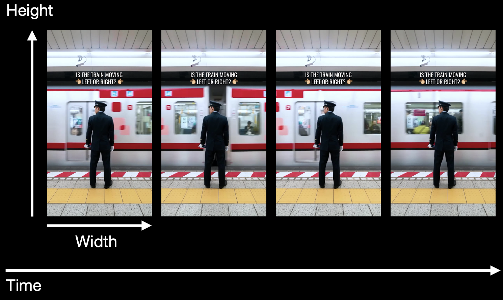
But what about attention? Just like 3D conv extends 2D conv by adding time, these attention schemes extend spatial attention by incorporating temporal dimensions in different ways.
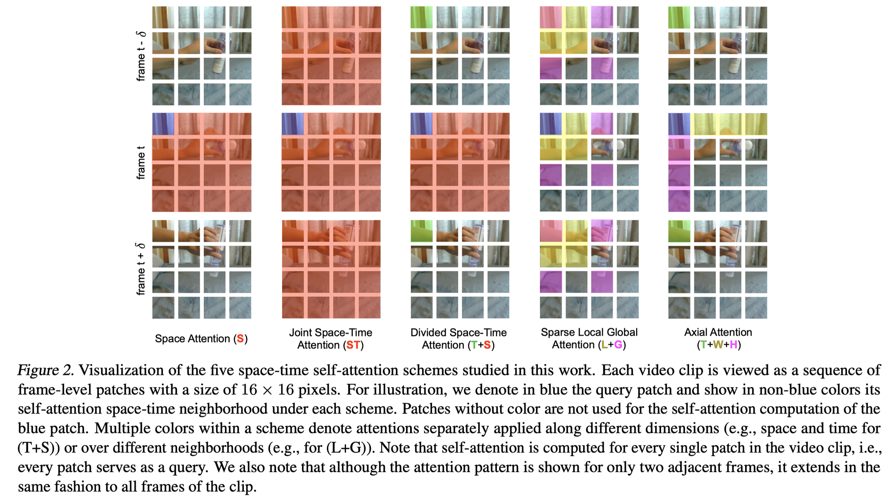
For each blue query patch, the colored patches show what it attends to:
- Space Attention (S): Only attends to patches in the same frame (spatial neighbors only)
- Joint Space-Time (ST): Attends to both spatial and temporal neighbors simultaneously in one operation
- Divided Space-Time (T+S): First attends temporally, then spatially (or vice versa) - separate operations
- Sparse Local Global (L+G): Attends to local neighborhood + global sparse sampling
- Axial Attention (T+W+H): Separate attention along time, width, and height axes
Generating Videos with Scene Dynamics (it’s a paper)
This architecture generates video by decomposing it into foreground (moving objects) and background (static scene) as two parallel streams:
- Foreground Stream: Uses 3D convolutions (spatial + temporal) to model moving content
- Background Stream: Uses 2D convolutions (spatial only) then replicates over time for static content
The design is both clever and cheaper since the background doesn’t need temporal modelling. As in the mask learns to separate what moves from what doesn’t.
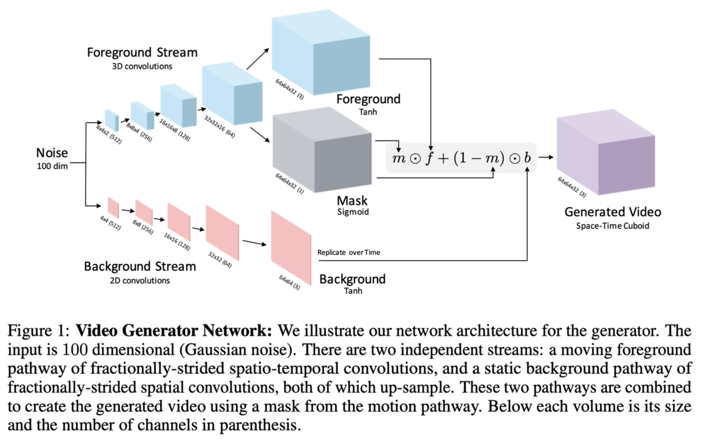
Some fallbacks of other models
So the Lecture goes on about how DDPM would require 262,144 pixels for a image. That’s not feasible for videos. It also talks about LDMs, where we could work in the latent space. It also talks about concepts such as Masked Self-Attention and 3D Nearby Self-Attention.
MetaAI introduced T2I (Text to Image) and T2V(Text to Video) in 2023.
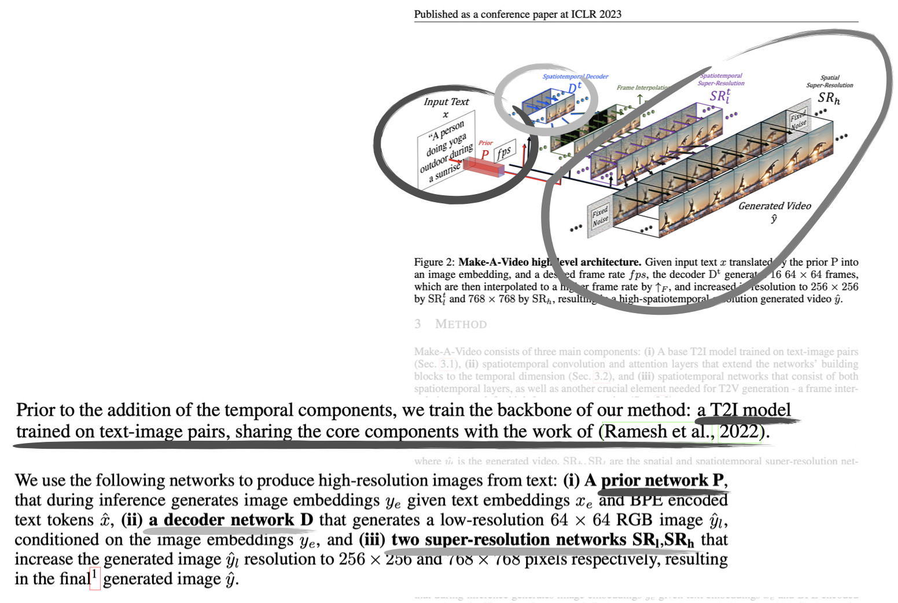
The idea: start with a pre-trained T2I model, then add temporal components.
- Prior P: Text → image embeddings (from trained T2I model) — this sounds like CLIP
- Decoder D: Generates low-res video frames conditioned on the image embeddings
- Employ two super-resolution networks , that increase the generated image resolution to and respectively.
I guess it’s super smart. You generate in the low-space and only the final result is high-resolution.
VAE Refinement Techniques
Exponential Moving Average (EMA):
- Instead of using the latest VAE weights, maintain a running average of weights over training
- This smooths out training fluctuations and leads to more stable outputs
Fine-tune for high visual quality:
- After initial training, further train the VAE specifically on high-quality datasets
- LAION-Aesthetics: images rated for aesthetic appeal
- LAION-Humans: images containing people
- This improves perceptual quality of generated images
Domain-specific architecture:
- Replace 2D convolutions with 3D blocks for video (adds temporal dimension)
- This makes the VAE aware of temporal coherence between frames
Add regularizer for KL objective:
- Add a term to the loss function that regularizes the KL divergence
- Helps the VAE learn better latent representations
Denoising Transformers (DIT)
These deserve their own page. Have to make one. But basically they replace the U-Net backbone in diffusion models with a Vision Transformer (ViT).
- Patchify: Split image into patches (like ViT)
- Transformer blocks: Instead of conv layers, use self-attention
- Input: noisy latent patches + timestep embedding + conditioning (e.g., class labels)
- Apply multi-head self-attention and feedforward layers
- Conditioning: Inject timestep and class info via:
- AdaLN (adaptive layer norm) - scale/shift parameters
- Cross-attention
- Or simply add to embeddings
- Unpatchify: Reconstruct output from patches
They present better performances at large scales and do not suffer from no skip connections. The transformer's global attention mechanism replaces the need for explicit skip connections. It’s more computationally expensive tho.
Skip connections: Direct connections from encoder layers to corresponding decoder layers at the same resolution:
Input (256x256)
↓ conv
Layer1 (128x128) ----→ concat → Layer1' (128x128)
↓ conv ↑ upconv
Layer2 (64x64) ----→ concat → Layer2' (64x64)
↓ conv ↑ upconv
Bottleneck (32x32)
Why skip connections?
- Preserve fine-grained spatial details lost during downsampling
- Help gradients flow during training
- Allow decoder to combine low-level features (edges, textures) with high-level features (semantics)
Quality Metrics
See Frechet Inception Distance and Inception Score.
Can we compare encodings over multiple NN layers? LPIPS
Here we introduce LPIPS (Learned Perceptual Image Patch Similarity) which compares encodings across multiple layers of a pretrained network (like VGG, ImageNET or AlexNet).
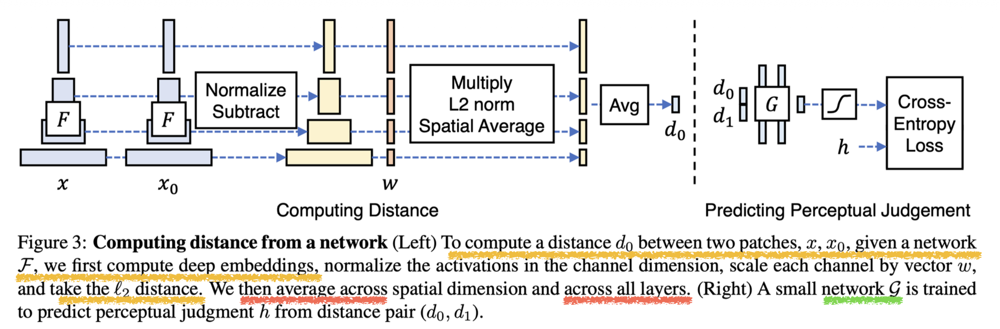
The right network which predicts human perceptual similarity from distances () uses cross-entropy loss against human judgements .
Why multiple layers?
Well, it’s a combination. The low-level features include edges and texture; the middle layers include shapes and patterns, and the high-level features include semantics and objects.
The learned weights determine which layers matter most for human perception. This is much better than simple pixel-wise metrics like MSE or SSIM.
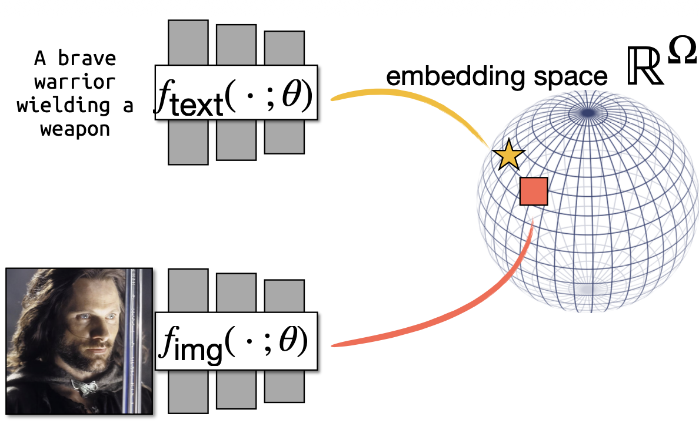
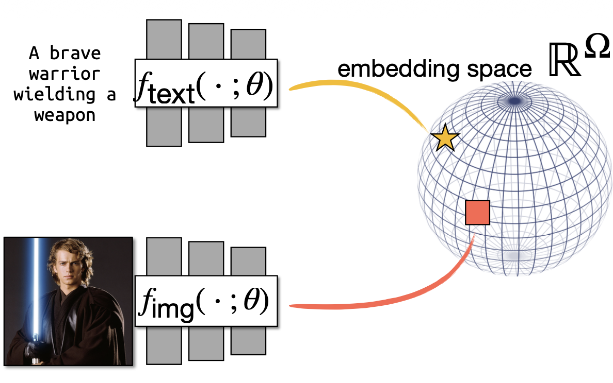
- fangirl moment :)
For an image with visual CLIP embedding and a candidate caption with textual CLIP embedding , they set and compute CLIP-S as:
Policy Learning & World Simulation
World Simulation:
UniSim is a video diffusion model that predicts future observations conditioned on actions — essentially a learned world model for robotics/RL. In the training process, we add noise to real video frames and the model learns to denoise and predict next frames given previous frames + action. This creates an autoregressive rollout capability. Paper: Learning Interactive Real-World Simulators
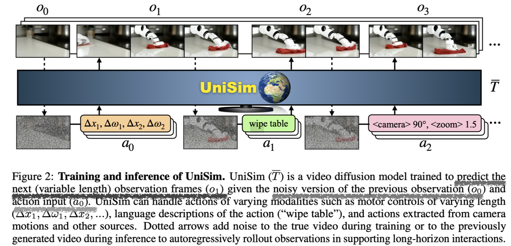
Policy Learning: (Paper: Diffusion Policy: Visuomotor Policy Learning via Action Diffusion)
While DDPMS are typically used for image generation ( is an image), they use DDPM to learn robot visuomotor policies. This requires two major modifications in the formulation:
- changing the output to represent robot actions
- making the denoising process conditioned on input observation .
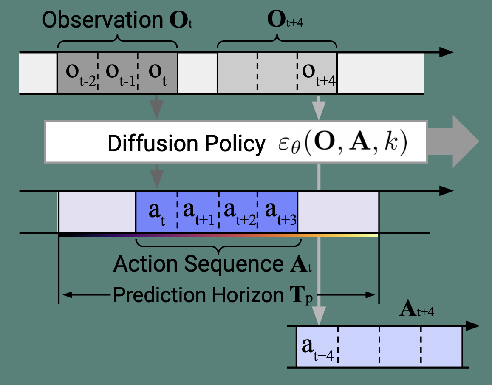
Input:
- Observation window (past frames: and future )
- Conditioning (from observations)
Diffusion Policy :
- Takes noisy action sequence and denoises it
- Conditioned on observations
Output:
- Action sequence over prediction horizon
- Only execute first action , then repeat (receding horizon control)
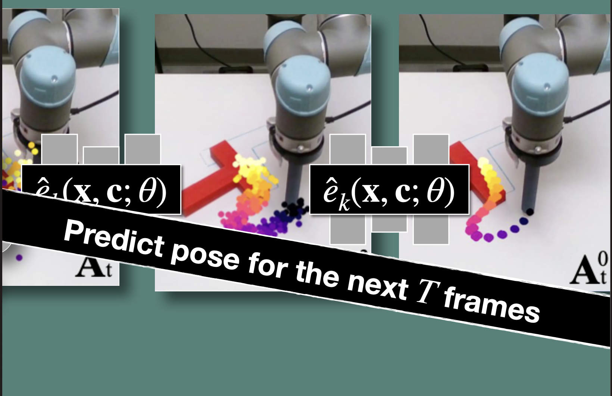
Takeaways:
- x is actions, not images (action trajectories instead of pixels)
- Conditioned on observations via c (robot camera views + state)
Audio Generation
Regarding audio applications, we talked about STFT(Short-Time Fourier Transform). STFT and spectograms are similar for simple sequences. STFT however represents how the frequency evolves over time. CLIP can be used in the same manner with a Text Encoder and a Audio Encoder.
From the paper “Fast Timing-Conditioned Latent Audio Diffusion” regarding Stable Audio
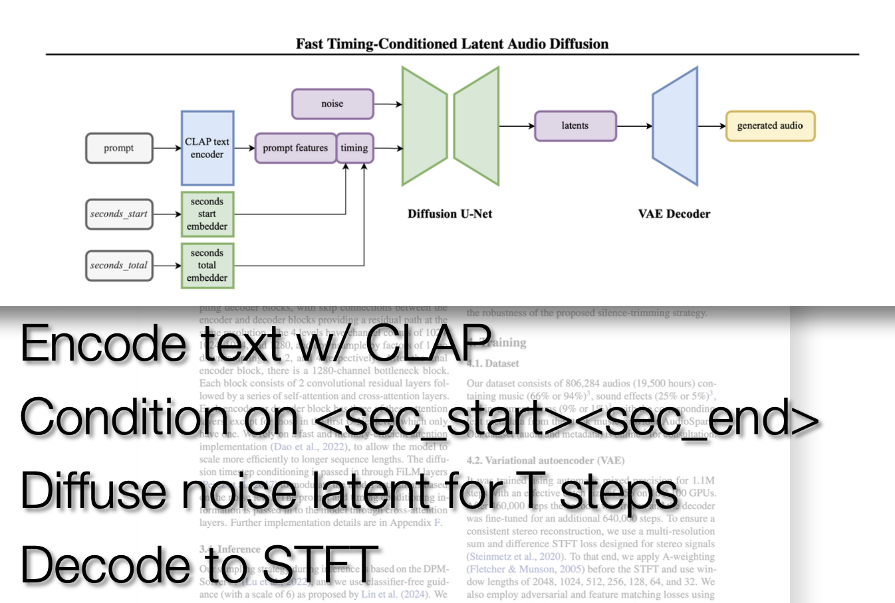